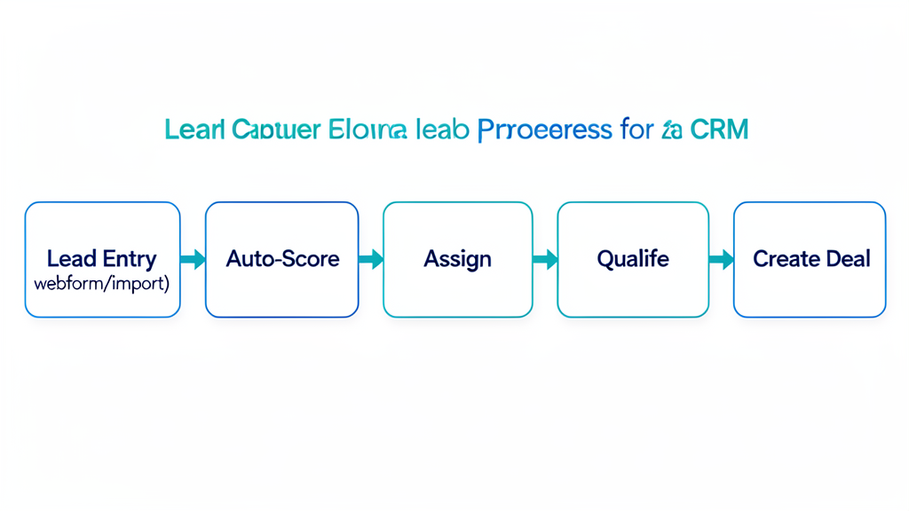
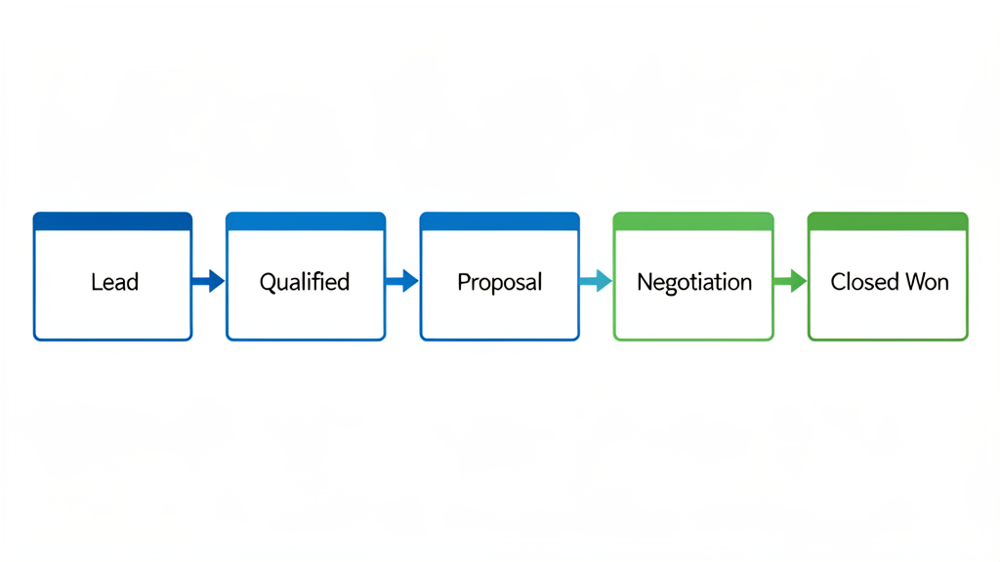
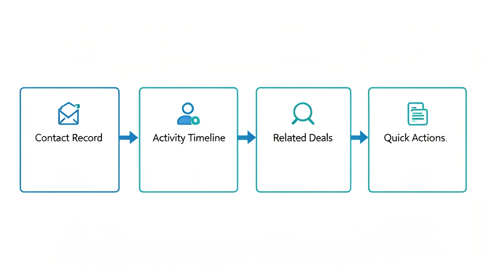
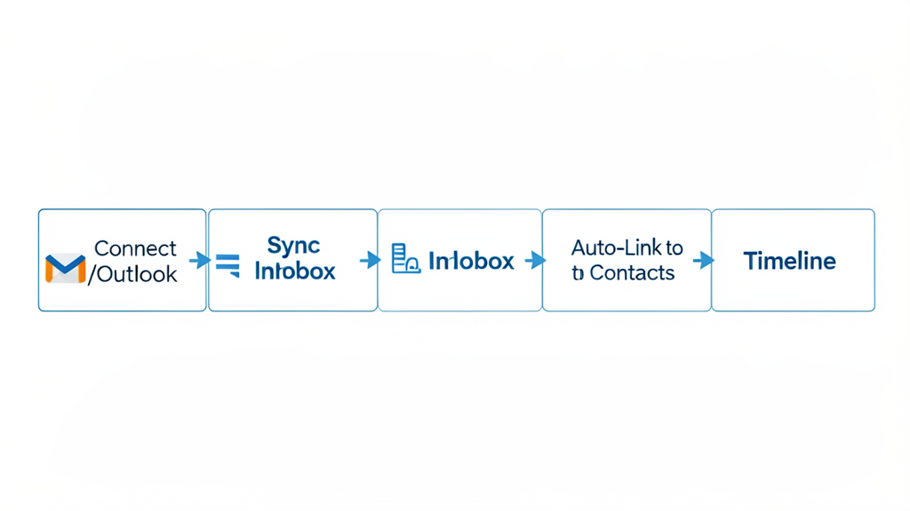
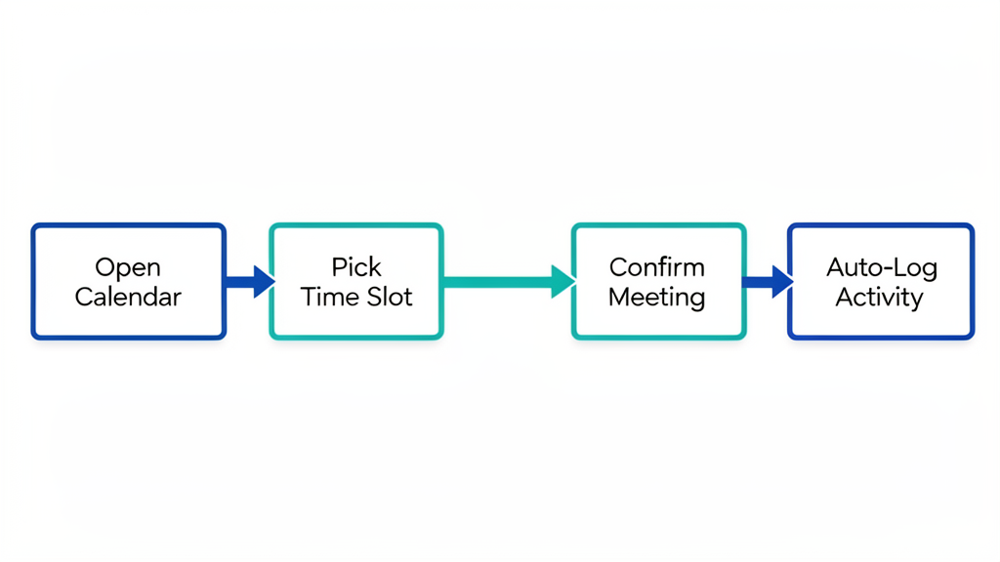
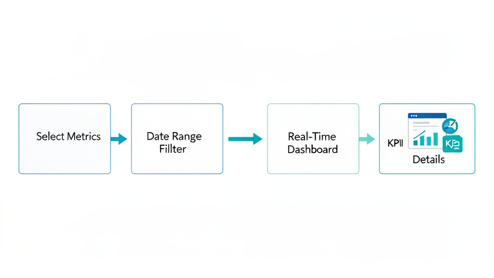
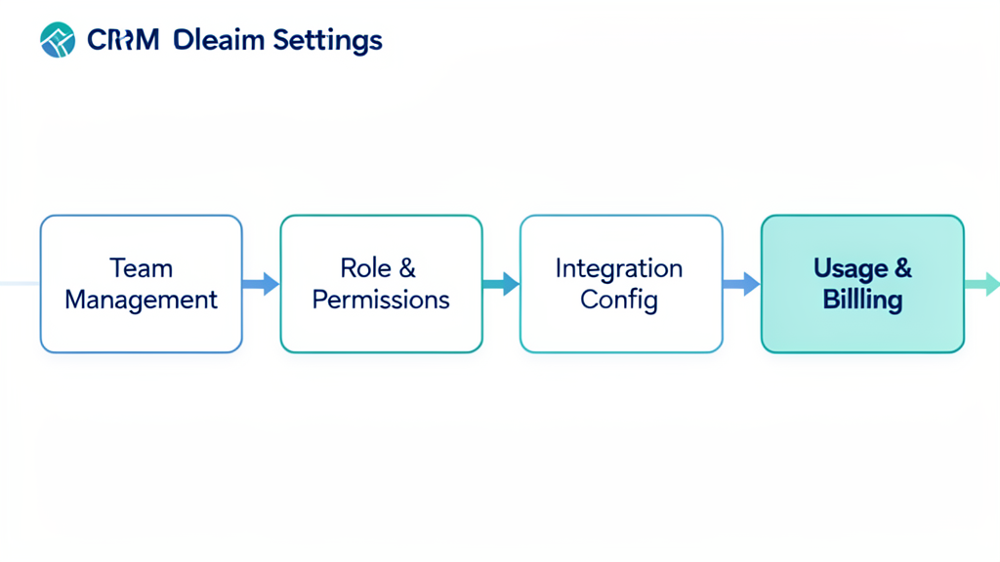
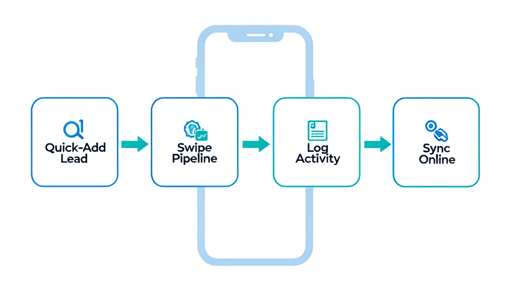
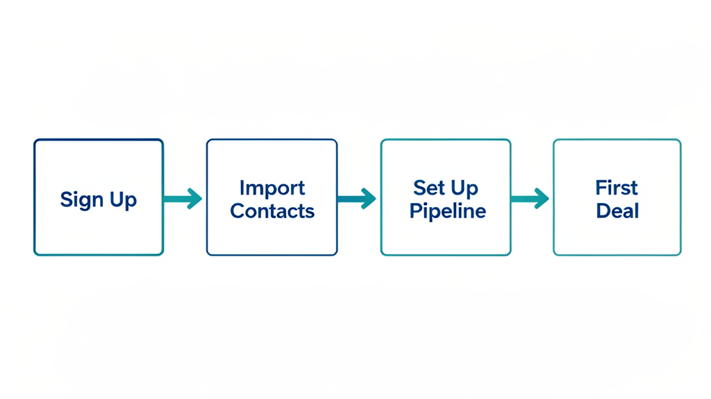

FrontierCRM — UX Workflow Design
Source: Feature analysis (T2), Salesforce competitive research (T3), User personas & feature consolidation (T5) Audience: Product, Engineering, Design teams Deliverable: End-to-end UX workflows per core feature, per persona type
Table of Contents
- Lead Capture → Assignment → Qualification
- Deal Pipeline Management
- Contact Management
- Email Sync & Sequencing
- Calendar Scheduling & Availability
- Reporting Dashboard
- Admin Settings
- Mobile Workflows
- Onboarding Wizard
1. Lead Capture → Assignment → Qualification

Persona Map
| Persona | Role in Workflow | P0/P1/P2 |
|---|---|---|
| Alex (SMB Rep) | Captures leads, qualifies | P0 (lead scoring) |
| Sam (Biz Owner) | Captures leads, auto-routes | P0 (lead assignment) |
| Casey (Admin) | Configures routing rules | P1 |
| Morgan (Manager) | Monitors lead velocity | P0 (assignment) |
User Journey Map
Optimal Screen Flow
Key Interactions
- Lead creation — 3 entry points:
- Webform auto-capture (webhook → API → appears in queue)
- Manual entry (click "+Add Lead", fill 4 fields: name, email, company, source)
-
CSV import (drag-and-drop, column mapping preview, conflict resolution)
-
Auto-scoring — On creation, AI assigns score 0-100 based on:
- Email domain reputation (company_size heuristic)
- Engagement signals (opened email? clicked link?)
- Industry fit (configurable by Casey)
-
Score badge appears inline in list view
-
Assignment — Two modes:
- Auto-route: Round-robin or rules-based (Casey configures in Admin)
- Manual claim: Unassigned leads show "Claim" button; rep clicks to own
-
Assignment triggers push notification to assigned rep
-
Qualification workflow:
- BANT (Budget, Authority, Need, Timeline) checklist in sidebar
- Partial qualify: "Not yet" saves checklist state, creates follow-up task
- Full qualify: Creates deal record, links source lead, transitions lead to "Qualified"
- Disqualify: Moves to "Disqualified" with required reason picklist
Error States
| State | Trigger | UI Response |
|---|---|---|
| Import parse failure | CSV has malformed rows | Show error banner: "2 of 50 rows failed to import. [Download errors.csv]" |
| Duplicate detection | Imported lead matches existing contact | Merge dialog: "ACME Corp matches existing contact. [Merge] [Keep Separate]" |
| Webhook timeout | Lead source endpoint unreachable | Queue with status "Pending Sync"; retry indicator with countdown |
| Scoring unavailable | AI model degraded | Show score as "--" with note "Scoring temp. unavailable, using rules" |
| Assignment conflict | Two reps claim same lead at once | Second rep gets "Already assigned to Alex" toast. Offer "Request access" |
Empty States
Loading States
- Leads list: Skeleton rows (3 shimmer lines per row) for first load; cached list shown on subsequent visits with pull-to-refresh indicator
- Lead detail: Skeleton card for contact info; timeline shows "Loading activity..." with spinner
- Scoring: Pulsing score badge with ellipsis animation while AI scores
- Import: Progress bar with "Importing 150 of 500 rows... [Cancel]" ; remaining time estimate
2. Deal Pipeline Management

Persona Map
| Persona | Role | Key Needs |
|---|---|---|
| Alex (SMB Rep) | Updates stages, moves deals | Kanban + list, 1-2 click updates |
| Jordan (Ent Rep) | Multi-threaded deals, forecasting | Stakeholder maps, deal rooms |
| Morgan (Manager) | Pipeline health, coaching | Deal velocity, at-risk flags |
| Riley (Director) | Forecast accuracy, roll-up | Multi-period forecasting |
| Sam (Biz Owner) | Simple pipeline, fast close | Visual kanban, deal amount totals |
User Journey Map
Optimal Screen Flow
Key Interactions
- Kanban drag-and-drop: Drag card between columns → stage transition overlay appears → confirm amount/date/notes → 1-2 clicks total
- List view toggle: Toggle between kanban and sortable table (sort by amount, stage, age, owner)
- Stage transition overlay: Lightbox on drop; pre-populates amount, shows stage-specific fields (e.g., "Competitor" on Closed Lost)
- Deal scoring refresh: Score recalculates on stage change, activity, or AI timer (daily)
- Multi-threaded stakeholder map (Jordan persona): Dedicated section in deal detail; add stakeholder with role, influence weight (⭐ primary, 🔵 influencer, 🟢 supporter), engagement level
- Deal rooms (Jordan persona): Shareable workspace for complex deals — shared notes, document folder, team activity feed, external guest access
- Forecast mode (Morgan/Riley): Toggle forecast overlay on pipeline: shows predicted close probability, expected revenue (amount × probability), confidence interval
Error States
| State | Trigger | UI Response |
|---|---|---|
| Stage move conflicts | Two reps move the same deal simultaneously | Second rep gets "Deal was already moved to Proposal by Alex. [View current state]" |
| Amount validation | Stage move with $0 or missing amount | Inline validation: "Amount is required before moving to Negotiation" |
| Forecast override needed | Manager adjusts close date without rep input | Warning: "This deal is owned by Alex. Notify them of the change?" |
| Lost deal without reason | Moving to Closed Lost with blank reason | Required field: "Select primary reason [Competitor ▼]" |
| Stakeholder merge | Adding stakeholder that matches existing contact | Merge prompt: "This person already exists as a contact. Link existing record?" |
Empty States
Loading States
- Kanban board: Skeleton cards (gray rectangles) in each column, 2-3 per column; columns load left to right
- Deal detail: Skeleton layout — card outline, stakeholder boxes fade in, timeline loads as "Loading activity..." with spinner
- Forecast overlay: Semi-transparent overlay with "Calculating forecast..." and progress bar; cached data shown while fresh calculation runs
- Stage transition: Optimistic update — card moves immediately to target column; toast shows "Moving to Proposal..." and reverts on API failure with error explanation
3. Contact Management

Persona Map
| Persona | Role | Key Needs |
|---|---|---|
| Alex (SMB Rep) | View 360, log activity | Contact detail, timeline |
| Jordan (Ent Rep) | Multi-touch contacts | Account hierarchies, team contacts |
| Sam (Biz Owner) | Simple address book | Import from Google Contacts |
| Taylor (Support) | Customer 360 | Support + sales unified view |
| Casey (Admin) | Data quality | Dedup, import/export, field config |
User Journey Map
Optimal Screen Flow
Key Interactions
- 360-degree view: Tab-less single page; activity timeline auto-sorted reverse chronological; related deals/tickets inline
- Quick action bar: Sticky bar at bottom of contact detail for 4 primary actions; keyboard shortcuts (L=log call, E=send email, N=add note, M=schedule meeting)
- Segment management: Create dynamic segments (e.g., "Hot Leads" = score > 70 AND last touch < 7d); auto-populates, static segments for manual curation
- Duplicate detection: On add/import, fuzzy match on email + name + company → merge dialog with side-by-side comparison
- Bulk operations: Select multiple contacts → bulk email, bulk tag, bulk add to segment, bulk export, bulk delete
- Contact enrichment (Jordan persona): Auto-fetch LinkedIn data (title, company, location) when email is added; enrichment is clearly labeled as automated in the UI
- Unified Customer 360 (Taylor): Contact page shows both sales pipeline and support tickets; collision detection banner if sales and support contact the customer within same day
Error States
| State | Trigger | UI Response |
|---|---|---|
| Duplicate on save | Saving a contact matching an existing record | Merge dialog: side-by-side fields, "Keep this field from new" / "Keep existing" per field |
| Email validation | Invalid email format | Inline error: "Please enter a valid email address" + format hint |
| Import encoding | CSV with non-UTF-8 characters | Preview pane shows problematic rows; "Fix encoding" button offers auto-detection |
| Enrichment failure | LinkedIn API unavailable | Badge: "Enrichment: 3 of 5 contacts enriched. [Retry]" |
| Tag limit | Exceeds max tags per contact | Tooltip: "Max 15 tags per contact" |
Empty States
Loading States
- Contacts list: Skeleton rows (avatar circle + 3 shimmer lines), fade in as list loads; "N contacts" count incrementally updated
- Contact detail: Skeleton card layout; timeline shows skeleton lines that fill with content as activity loads
- Import preview: "Analyzing file..." progress bar; then "500 rows detected — mapping columns in preview" with interactive column mapper
- Enrichment: Contact card shows "Enriching..." badge on fields being fetched; fields populate individually as they arrive (progressive enhancement)
4. Email Sync & Sequencing

Persona Map
| Persona | Role | Key Needs |
|---|---|---|
| Alex (SMB Rep) | Auto-log, send from CRM | One-click activity capture |
| Jordan (Ent Rep) | Sequences, tracking | Template sequences, open/click tracking |
| Sam (Biz Owner) | Out-of-box sync | Connect inbox, instantly works |
| Taylor (Support) | Reply from CRM | Ticket-linked email replies |
User Journey Map
Optimal Screen Flow
Key Interactions
- Auto-logging: Every sent/received email linked to CRM contact (by email address match). Logged silently — no modal, no prompt. Activity appears in timeline within 30 seconds.
- Email sidebar (browser extension): Paired browser extension shows CRM context in Gmail/Outlook web. Shows contact, open deals, recent activity, quick actions. Does NOT require user to switch to CRM.
- CRM-native compose: Templates with
{{variable}}insertion, tracked links (via redirect), open tracking pixel. Schedule send for later. Save as draft available. - Sequence builder: Drag-and-drop visual builder. Steps: Email, Wait (duration), Task (call/to-do), Condition (skip if replied/booked). Templates saved as library.
- Opt-out management: One-click unsubscribe in email footer (tracked). Opted-out contacts flagged with banner: "This contact has opted out of sequences — sending restricted to 1:1"
- Multi-account sync (Enterprise): Connect multiple mailboxes (personal + team inbox); select default sending address per context
- Offline queue: If Gmail/Graph API is down, emails queue locally; user sees "Queued — will send when connection restored" + retry countdown
Error States
| State | Trigger | UI Response |
|---|---|---|
| Send failure | API timeout | "Message failed to send. [Retry] [Save as Draft]" |
| Sync interruption | OAuth token expired | Banner: "Email sync paused — reauthorize Gmail/Outlook [Reconnect]" |
| Rate limit hit | Gmail 2K/day or Graph throttling | "Send limit reached for today. Queue resets at midnight UTC." Banner + disable send button |
| Template variable unfilled | {{first_name}} but contact has no first_name |
Preview warning: "1 variable couldn't be filled. [Edit template |
| Bounce detected | Recipient address invalid | Flag on sequence step: "Bounced — contact marked invalid. Unenroll?" |
| Attachment too large | >25MB attachment | "Attachment exceeds 25MB limit. Use a file link instead." |
Empty States
Loading States
- Email sync: Connection status badge in header: "Syncing..." (spinning arrows) → "Connected (30s ago)" (green dot)
- Inbox load: Skeleton email rows; "N unread" counter updates incrementally; first 50 emails load instantly, batch the rest
- Send: Optimistic send — email appears in Sent immediately with "Sending..." badge; replaces with timestamp on success, reverts + error on failure
- Sequence stats: Placeholder bars (gray) animate to filled colored bars as stats load; "Calculating..." for reply rates
5. Calendar Scheduling & Availability

Persona Map
| Persona | Role | Key Needs |
|---|---|---|
| Alex (SMB Rep) | Quick scheduling | Book meetings from CRM, auto-log |
| Sam (Biz Owner) | Availability sharing | Share calendar link, see free slots |
| Taylor (Support) | Customer calls | Schedule from ticket, block time |
| Casey (Admin) | Calendar integration | Connect Google/Outlook/CalDAV |
User Journey Map
Optimal Screen Flow
Key Interactions
- Auto-meeting logging: Meeting confirmed → auto-creates calendar event in connected calendar + logs to CRM timeline + links to deal
- Booking link (Sam persona): Generate shareable link (
crm.frontier.app/book/alex-smith); recipient picks slot from real-time availability; auto-confirms both parties - Free/busy overlay: When scheduling from deal or contact page, overlay shows caller's available slots pulled from connected calendar via API (Google freeBusy / MS Graph getSchedule)
- Meeting types: Predefined meeting types (Discovery, Demo, Proposal Review, Check-in) each with default duration, prep checklist template, automated follow-up sequence enrollment
- Calendar sync health: Status indicator for each connected calendar; shows last sync time, connection status, number of events synced
- Meeting notes template: On meeting start (booked time), auto-creates a note template with AI-suggested agenda based on deal stage and recent activity
- Multi-calendar selection (Enterprise): Show multiple calendars overlaid; filter by deal-related vs internal events
Error States
| State | Trigger | UI Response |
|---|---|---|
| Calendar not connected | User tries to schedule before connecting | Dialog: "Connect your calendar to see availability. [Connect Google] [Connect Outlook]" |
| Slot conflict | User selects slot that's now booked | "This slot is no longer available. Please select another." Highlight remaining slots. |
| Timezone mismatch | User and contact in different timezones | Clear indicator: "Your timezone: PDT. Jane's: EDT. Showing availability in her timezone." |
| Sync failure | Calendar API unreachable | Banner: "Calendar sync paused. Slots may not reflect current availability. [Retry]" |
| Booking link expired | Link older than 30 days | "This booking link has expired. Request a new one." |
Empty States
Loading States
- Calendar view: Skeleton week grid with gray cell placeholders; events fade in with staggered delay
- Free/busy query: "Checking availability..." with pulsing calendar icon; slots populate as API returns
- Booking confirmation: Optimistic confirmation card with "Syncing to your calendar..." spinner → checkmark
- Sync health check: Status indicator cycling through "Checking..." → green/red dot
6. Reporting Dashboard

Persona Map
| Persona | Role | Key Needs |
|---|---|---|
| Morgan (Manager) | Pipeline health, team coaching | Real-time dash, deal velocity, activity |
| Riley (Director) | Revenue forecasting, territory | Multi-period forecast, conversion funnel |
| Dana (Exec) | High-level KPIs, churn signals | ARR, pipeline coverage, customer health |
| Alex (Rep) | Personal performance | My deals, my activity, my conversion |
User Journey Map
Optimal Screen Flow
Key Interactions
- Role-based default dashboard: Each persona sees their relevant dashboard on first load. Morgan → Pipeline & Activity. Dana → Executive Summary. Alex → My Performance.
- Drag-and-drop report builder: Select columns, filters, groupings, sorts from sidebar field list; live preview updates as fields are added
- Click-through drill-down: Any aggregate metric is clickable — clicking "12 deals" opens filtered deal list; clicking "Alex" opens rep performance; clicking "14d in Proposal" opens that deal detail
- Alert strip: Top-of-dashboard alert bar for actionable items: stalled deals, activity drops, forecast deviations, churn signals. Each alert has a "View" CTA that navigates to the relevant record.
- Export: PDF (dashboard layout snapshot) and CSV (underlying data). PDF respects role-level data access (Dana sees all teams, Alex sees only own data).
- Custom date ranges: Predefined (This Q, Last Q, This Month, Last Month, This Year) + custom date picker. All visualizations update immediately.
- Forecast comparison (Riley/Dana): Side-by-side view: previous forecast vs actual vs updated forecast. Confidence intervals shown as shaded ranges on revenue charts.
Error States
| State | Trigger | UI Response |
|---|---|---|
| No data in range | Selected date range has no deals | "No data for this period. Try a wider date range or check filters." |
| Report too complex | >10 filters or >5 groupings | Warning: "This report may be slow to load. Consider simplifying. [Load Anyway] [Simplify]" |
| Export fails | PDF generation timeout | "Export failed. Try a smaller date range or fewer visualizations. [Retry]" |
| Data staleness | Dashboard hasn't refreshed in >5 min | Banner: "Data may be stale. Last refresh: 5 min ago. [Refresh Now]" |
| Permission filter | User views report with data they shouldn't see | Automatically filtered — no error shown; rows outside user's scope silently excluded |
Empty States
Loading States
- Dashboard load: Skeleton layout showing gray placeholder boxes in widget grid; widgets load independently (not all-or-nothing); most important metric (pipeline total) loads first
- Report preview: "Generating report..." with progress indicator; large datasets show estimated row count
- Export: "Preparing your export..." with spinner; PDF shows page count as it generates
- Refresh: Widgets show spinner overlay while re-fetching; cached values remain visible behind semi-transparent overlay
7. Admin Settings

Persona Map
| Persona | Role | Key Needs |
|---|---|---|
| Casey (Admin) | Configuration, automation, RBAC | No-code builder, workflows, permissions |
| Riley (Director) | Territory management | Territory map, assignment rules |
| Morgan (Manager) | Approval workflows | Deal approval thresholds |
User Journey Map
Optimal Screen Flow
Key Interactions
- No-code field/form builder: Click "+ Add Field" → select type (Text, Number, Currency, Date, Picklist, Multi-Select, Lookup, Formula) → set requirements → assign to page layouts. Changes reflect immediately in the UI shown in a live preview panel.
- Workflow builder: Visual trigger → conditions → actions pipeline. Actions chainable. Each action configurable inline. Test mode: "Run with last 10 records to validate."
- Drag-and-drop page layout: Reorder fields on any record page. Sections collapsible. Show/hide based on record type or stage.
- Bulk import/export wizard: Step 1: Upload (drag CSV). Step 2: Column mapping (auto-detect, manual correct). Step 3: Preview (first 10 rows). Step 4: Dedup rules (skip, update, create duplicate). Step 5: Execute with progress bar.
- Approval flows: Configure threshold-based approval chains (e.g., deals > $50K need manager approval, > $100K need director). Approvers get notification with deal context and approve/reject/request-changes options. Approval history visible on deal detail.
- Audit log: Searchable, filterable by user/action/date/module. Shows "who did what when" with before/after values for field changes. Log retention configurable (90d default, 1yr max).
- Integration marketplace: Browse pre-built connectors (Slack, Zapier, QuickBooks, Stripe). One-click connect with OAuth flow. Custom webhook configuration with test payload generator.
Error States
| State | Trigger | UI Response |
|---|---|---|
| Field name conflict | Two custom fields with same API name | "API name 'custom_field__c' is already in use. [Rename] [Auto-generate unique name]" |
| Workflow loop detected | A → B → A trigger chain | "This workflow would create a loop with 'Welcome Email'. Cycles not allowed." |
| Import validation errors | CSV rows fail validation | "12 rows failed validation. [Download error report]" with row number + field + reason per row |
| Permission escalation | Non-admin tries to create role | "You don't have permission to create roles. Contact your CRM admin." |
| Integration disconnection | API key expired / revoked | Banner: "Stripe connection lost. 3 workflows depend on this integration. [Reconnect]" |
| Duplicate role name | Role name already exists | Inline error: "Role name 'Sales Rep' already exists. Please choose another name." |
Empty States
Loading States
- Settings load: Skeleton navigation sidebar; content area loads with placeholder cards
- Field preview: "Updating preview..." semi-transparent overlay on preview panel; actual values visible behind it
- Import execution: Progress bar with "Processing row 342 of 500" + estimated time remaining + cancel button (cancels cleanly — no partial state corruption)
- Workflow test run: "Testing workflow with 10 sample records..." progress spinner; results show per-record: pass/fail/detail
8. Mobile Workflows

Persona Map
| Persona | Role | Key Needs |
|---|---|---|
| Alex (SMB Rep) | Full parity with desktop | Send email, update deal, log calls |
| Sam (Biz Owner) | Run business from phone | Pipeline view, quick add, notifications |
| Taylor (Support) | Respond on the go | Ticket view, quick reply, SLA alerts |
| Morgan (Manager) | Monitor pipeline | Push alerts, at-risk flags, quick approvals |
User Journey Map
Optimal Screen Flow
Key Interactions
- Quick-add lead: Bottom sheet with camera (scan business card via OCR) + manual entry. 4 required fields only. Auto-links to current location/event for source tracking.
- Push notifications for deal activity: Configurable — stage changes, email replies, task due, manager @mention. Tap notification → deep link to relevant record.
- Offline mode: Full read access to last-synced data (pipeline, contacts, deals). Queue writes locally — sync when online. Visual indicator: "Offline - changes queued (3)" badge in header.
- Swipeable pipeline: Horizontal swipe to flip between stages (kanban columns). Each stage shows deal cards with stage-aware quick actions (Qualify stage → "Score" action; Proposal stage → "Send Proposal").
- Fluid navigation: Tab bar at bottom: Home, Pipeline, Email, Activity, More. Slide-in menu from left for settings, integrations, help.
- Gesture shortcuts: Swipe right on deal card → log call. Swipe left → quick email. Long press → drag to different stage.
- Business card scanning: Camera mode with auto-crop, OCR name/company/email/phone, pre-fills lead form, user reviews before saving.
Error States
| State | Trigger | UI Response |
|---|---|---|
| Offline save conflict | Contact modified on server while offline | "This contact was updated by someone else. [Keep My Changes] [Use Server Version]" |
| Push notification failure | Device notification permission denied | Banner: "Enable notifications to get deal alerts. [Enable in Settings]" |
| Camera unavailable | No camera permission | Fallback: "Camera access needed for business card scan. Enter details manually below." |
| Sync stalled | Poor connectivity | Banner: "Slow connection — syncing in background." Spinner in header. |
| Photo too large | >10MB card scan image | Auto-compress: "Image compressed from 12MB to 800KB" |
| Session timeout | App in background >30 min | Re-auth screen (Face ID / PIN) on resume; return to same screen after auth |
Empty States
Loading States
- Mobile app launch: Splash screen (brand logo + "Loading your CRM...") for cold start; warm start uses cached data + background refresh
- Tab switch: Previous tab content remains visible; new tab shows skeleton briefly while data loads; push-to-refresh always available
- Offline sync: "Syncing 3 items..." indicator in header; individual items show checkmark as synced; tap indicator to see sync detail
- Image processing: "Scanning card..." overlay with camera preview; result appears inline below the camera viewfinder
9. Onboarding Wizard

Persona Map
| Persona | Role | Key Needs |
|---|---|---|
| Sam (Biz Owner) | Fast setup | Import from Google Contacts, start in 10 min |
| Casey (Admin) | Full configuration | Custom fields, workflows, integrations |
| Alex (SMB Rep) | Quick productivity | Get leads in, start selling |
User Journey Map
SMB vs Enterprise Branching
Key Interactions
- Role-based onboarding split: First screen asks team size → SMB path (fast, minimal decisions) vs Enterprise path (full configuration, RBAC, integrations)
- Progress indicator: Top bar shows "Step 2 of 5" with visual progress dots. Completed steps are checkmarked and clickable to revisit.
- Smart defaults: Pipeline stages pre-configured based on team size and industry selection. SMB = simpler pipeline (5 stages). Enterprise = 7 stages with custom field prompts.
- Deferred configuration: Every step has "Skip — do it later" with clear path to find it: "Settings → [Page name]" shown on skip.
- Import confidence: Shows row counts after connecting: "We found 247 contacts. 238 are ready to import, 9 need review." Gives user control over what to import before committing.
- Undo-first design: All destructive wizard choices (import all contacts, set pipeline stages) show preview + confirmation. "Undo" available for 30 seconds after each action via toast.
- Guided first action: After wizard → dashboard opens with a guided tour overlay ("Click here to add your first deal"). Optional — "Skip tour" in corner.
Error States
| State | Trigger | UI Response |
|---|---|---|
| Email connection fails | OAuth denied or network error | "We couldn't connect your inbox. [Try Again] [Skip — Connect Later]" |
| Import connection error | Google Contacts API unreachable | "Couldn't load contacts right now. [Retry] [Upload CSV Instead]" |
| Email already in use | Inviting someone already on the account | "Mike (mike@acme.com) is already on this account. Invite not sent." |
| Pipeline template unavailable | Selected industry template API fail | "Couldn't load template. Using default pipeline instead. [Customize Later]" |
| Wizard timeout | User idles >15 min during setup | "Session expired for security. Don't worry — your progress is saved. [Resume Wizard]" |
Empty States
Loading States
- Step transition: Smooth slide animation between steps (150ms); content fades in after slide completes
- Import scanning: "Scanning your contacts..." with rotating search animation and "Found 247 contacts" live count
- Connection check: "Verifying connection..." with spinning checkmark; transitions to green check or red X
- Invite sending: "Sending invites..." individual status per invitee (sent/pending/failed); retry button on failed
Cross-Cutting UX Principles
These principles apply to ALL workflows above:
Loading State Pattern
- Cold load: Skeleton placeholder matching page layout structure
- Refresh: Optimistic UI — show stale data with subtle "refreshing..." indicator
- Error recovery: Error banner + retry button; NEVER gray out the entire page
- Background sync: Non-blocking; user can continue working while data syncs
Empty State Pattern
- Illustration: Simple SVG illustration or icon per section (inbox, pipeline, contacts)
- Call to action: 2-3 prominent action buttons for first steps
- Context: Brief text explaining what this section does
- No dead ends: Every empty state provides a path forward
Error State Pattern
- Inline first: Field-level validation before submission
- Optimistic recovery: Show the user's intent, revert on failure with explanation
- Specific messaging: "Couldn't save. X reason." NOT "An error occurred."
- Actionable: Every error has a recovery action (Retry, Skip, Edit, Cancel)
Accessibility (built-in)
- Keyboard navigation: Tab through all interactive elements; Enter/Space to activate
- Screen reader: ARIA labels on interactive elements; semantic HTML structure
- Color contrast: WCAG AA minimum (4.5:1 for text, 3:1 for large text)
- Motion sensitivity:
prefers-reduced-motion— disable animations, use instant transitions - Focus indicators: Visible 2px outline on focused elements
Mobile Parity Guarantee
- Feature parity: Every desktop action available on mobile (send email, update stage, configure workflows)
- Layout adaptation: Responsive, not scaled — mobile layout rearranges content for thumb reach
- Offline-first: Read cached, write queued, sync when connected
- Gesture complement: Tap + swipe + long-press as keyboard substitute
Generated from: Feature analysis (T2), Salesforce competitive research (T3), User personas & feature consolidation (T5) Designed by: Atlas (Architecture & Design) — allstars-atlas